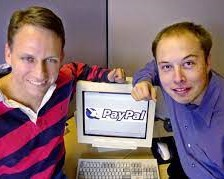
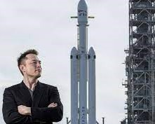
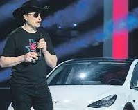
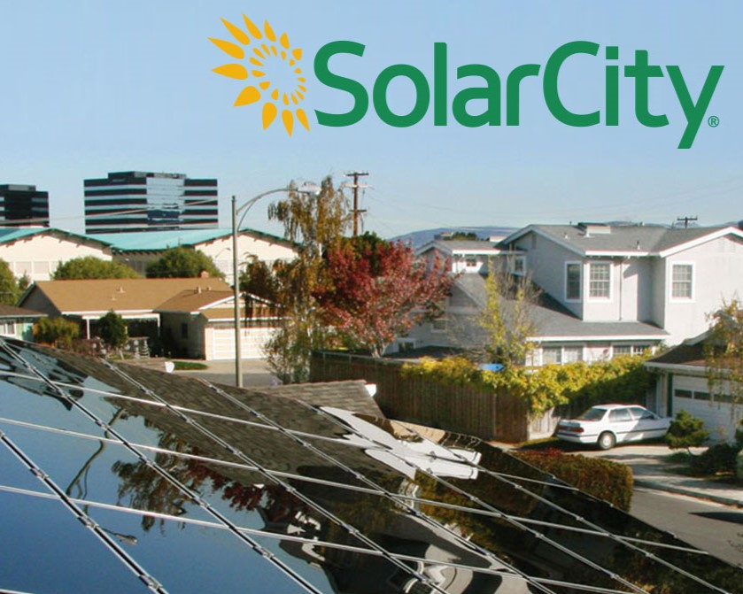
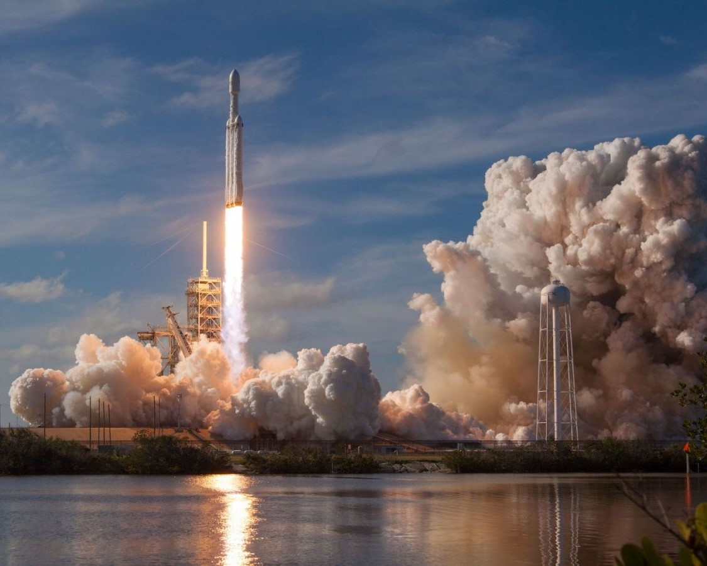
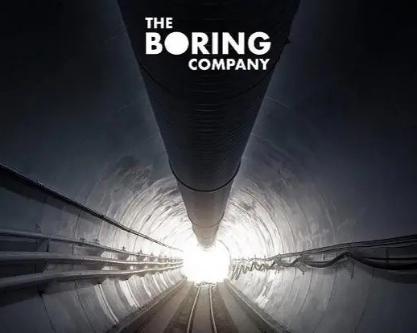
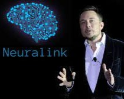

Elon Musk, un entrepreneur exceptionnel !
Elon Musk, un nom qui résonne dans le monde de l'entrepreneuriat et de l'innovation. Il incarne l'audace et la vision. De Tesla à SpaceX en passant par SolarCity, ses entreprises révolutionnent l'industrie. Sa quête de l'innovation va au-delà des affaires, avec des rêves de colonisation martienne et d'énergie durable. Découvrez le parcours d'un visionnaire qui repousse les limites de la technologie et inspire le monde entier. Elon Musk, un entrepreneur exceptionnel qui écrit l'avenir.
-
Zip2 Corporation (Fondée en 1996)

Zip2 était l'une des premières entreprises d'Elon Musk. Fondée avec son frère Kimbal, elle fournissait des solutions en ligne pour les journaux, notamment des annuaires et des cartes routières. La société a été vendue en 1999 à Compaq pour près de 300 millions de dollars, ce qui a donné à Musk son premier grand succès entrepreneurial.
-
X.com (qui est devenue PayPal) (Fondée en 1999)
Elon Musk a cofondé X.com, une entreprise de services financiers en ligne. Plus tard, X.com a fusionné avec Confinity, une entreprise de paiement en ligne, pour devenir PayPal. Elon Musk a été évincé de la direction de PayPal en 2000, mais cette entreprise est devenue un leader mondial des paiements en ligne.
-
SpaceX (Space Exploration Technologies Corp.) (Fondée en 2002)
SpaceX est une entreprise d'exploration spatiale fondée par Elon Musk avec pour objectif de réduire le coût de l'accès à l'espace. SpaceX a réussi à réaliser des lancements orbitaux, à développer le premier vaisseau spatial réutilisable (Falcon 9) et à travailler sur des projets d'exploration interplanétaire, notamment la colonisation de Mars.
-
Tesla, Inc. (Fondée en 2004)
Tesla est une entreprise de véhicules électriques de renommée mondiale. Elon Musk a pris la direction de l'entreprise en 2008, et Tesla a révolutionné l'industrie automobile en produisant des véhicules électriques haut de gamme, tels que le Model S, Model 3, Model X et Model Y. Tesla s'est également diversifiée dans les énergies renouvelables, y compris l'énergie solaire et le stockage d'énergie.
-
SolarCity (Fondée en 2006, rachetée par Tesla en 2016)
SolarCity était une entreprise d'énergie solaire axée sur les panneaux solaires pour les maisons et les entreprises. En 2016, Tesla a acquis SolarCity, permettant à l'entreprise de créer des solutions intégrées d'énergie solaire et de stockage d'énergie.
-
SpaceX a lancé Falcon Heavy (Février 2018)
En février 2018, SpaceX a réussi le lancement historique de Falcon Heavy, le lanceur le plus puissant du monde depuis la mission Apollo. Cela a démontré la capacité de SpaceX à envoyer des charges utiles lourdes dans l'espace et a ouvert de nouvelles possibilités pour l'exploration spatiale.
-
The Boring Company (Fondée en 2016)
The Boring Company a été créée pour explorer des solutions de transport souterrain, y compris le concept de l'Hyperloop, un système de transport à grande vitesse. L'entreprise a également entrepris des projets de tunnels pour réduire la congestion du trafic dans certaines villes.
-
Neuralink Corporation (Fondée en 2016)
Neuralink se concentre sur le développement d'interfaces cerveau-ordinateur (BCI) pour améliorer les capacités humaines, traiter les maladies neurologiques et ouvrir la voie à une interaction homme-machine plus avancée.
Ces entreprises illustrent la remarquable trajectoire entrepreneuriale d'Elon Musk, allant de la création d'entreprises Internet à la révolution de l'industrie automobile, en passant par l'exploration spatiale et les technologies émergentes. Musk est reconnu pour son engagement en faveur de l'innovation et de la transformation de divers secteurs grâce à la technologie.